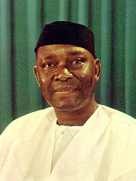
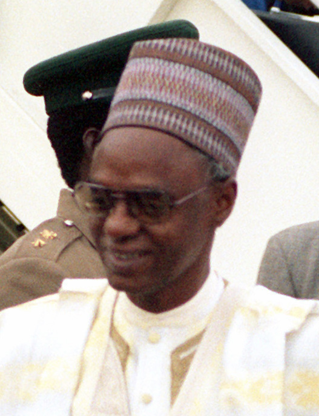
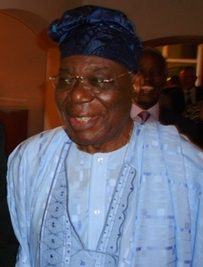
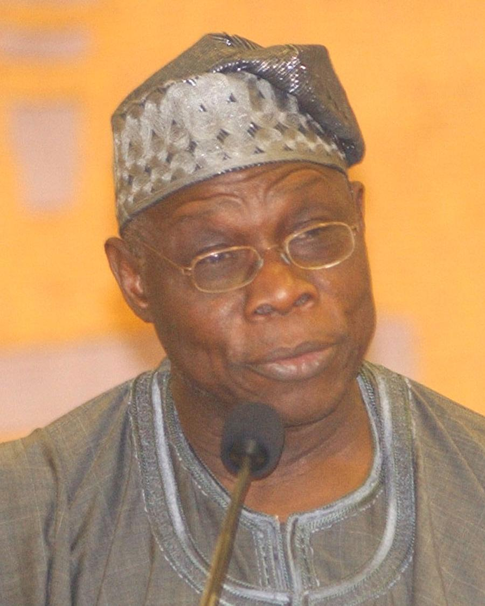
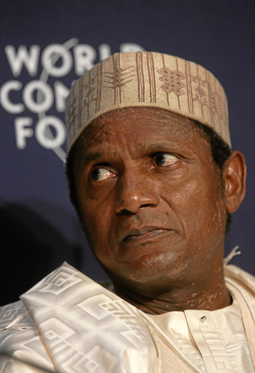

1999 - 2007 (8 years)

.jpg)
2015 - 2023 (8 years)

| S/N | Picture | Leader Names | DOB | Tenure Duration | Names of First lady | Tribe | Religion |
|---|---|---|---|---|---|---|---|
| 1 |  | Dr. Nnamdi Azikiwe | 16 November 1904 | 1963 – 1966 (3 years) | Flora Ogoegbunam | Igbo | Christianity |
| 2 |  | Alhaji Shehu Shagari | 25 February 1925 | 1979 – 1983 (4 years) | Hadiza Shehu Shagari | Fulani | Islam |
| 3 |  | Chief Ernest Shonekan | 9 May 1936 | 1993 – 1993 (83 days) | Margaret Shonekan | Yoruba | Christianity |
| 4 |  | Chief Olusegun Obasanjo | 5 March 1937 | 1976 – 1979 (3 years) 1999 - 2007 (8 years) |
Stella Obasanjo | Yoruba | Christianity |
| 5 |  | Alhaji Usman Musa Yar'Adua | 16 August 1951 | 2007 – 2010 (2 years 11 moths) | Turai YarAdua | Fulani | Islam |
| 6 | |
Goodluck Jonathan | 20 November 1957 | 2010 – 2015 (5 years) | Patient Jonathan | Ijaw | Christianity |
| 7 | |
Muhammadu Buhari | 17 December 1942 | 1983 – 1985 (1 years, 7 months) 2015 - 2023 (8 years) |
Aisha Buhari | Fulani | Islam |
| 8 | |
Bola Ahmed Tinubu | 29 March 1952 | 2023 – Present (Current) | Oluremi Tinubu | Yoruba | Christianity |